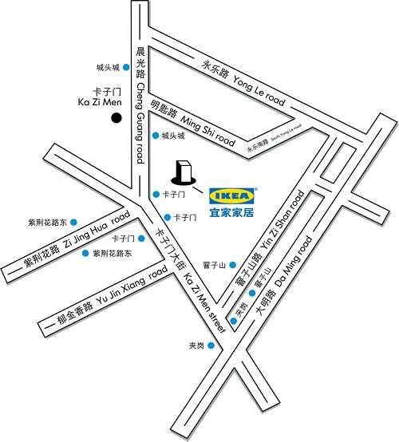

南京IKEA开业啦 @ Aug 27, 2008
家，世界上最重要的地方。--IKEA
来自瑞典的IKEA南京卡子门店明天正式开业。
昨天试营业最后一天，家里人去逛了逛，人山人海，什么东西都没买，因为付款的人排成长龙。
女人到了IKEA，蠢蠢欲动的购买欲，及对于“家”的憧憬立刻会浮现出来。
比如，我那特别爱存钱且固执的妈妈，逛了IKEA之后打算淘汰家里的旧破烂，不过第二天早晨她也许就会改变想法。她总说自己是过日子的人......人总是活在希望里，总期望以后如何如何......年纪大了，该享受就享受吧，不要再期望“以后”，过好当下最重要。
去过几次上海的IKEA，先前买过一些小东西，质量参次不齐，被套有掉色现象，浴巾吸水性不强，烛台掉漆...IKEA的家具更适合年轻的单身人群，简单易装，以后更换掉也不会太可惜。别说男人是视觉动物，女人也一样。IKEA把那么多漂亮的东西集中在一起展示，怎么不讨女人们欢心呢？

10 Responses to “南京IKEA开业啦”
2008-08-27
ＩＫＥＡ产品在欧洲类似于一次性用品，基于欧洲人游牧的特性，买房不是归宿，很多人一生都是租房度过，故衍生了瑞典这家公司的壮大。
2008-08-27
如果IKEA的商品大部分作为一次性消费，那对我们的环境将是多大的伤害啊？
2008-08-27
也许刚才比喻得不够恰当!这样说吧，精品与大众品的区别也许仅仅在于量的区别，能撑起一家世界五百强排名靠前的企业，没有足够大的销量是很难做到的，也就决定了它必须是个易耗品，而不能像精品一样收藏。
所以就有了法国陈窖美酒的魅惑，而不是像芝华士一样烂到假货横行。
好东西从来只给少数人。
2008-08-27
不知道南京店里有没有瑞典食品屋？可以试试来自瑞典的风味哦。果酱不错的。
2008-08-27
同意“一斤蓝色”的留言：）
2008-08-28
自打人类进入工业文明,
我们都只是可怜的消费环节上的一环…..
2008-08-30
我的小铺就在广州宜家旁,有时间也去溜哒, 除了它的产品定位比较准确外, 我觉得他们的展示功夫是值得一提, 很多白领MM是满喜欢那种温馨的感觉, 不其然就有一种拥有的冲动了.
他的餐厅算是便宜的, 中午的时候很多附近的白领都去午餐, 1-7的中午肯定是座无虚席,很多时候还要等. 也有很多阿姨喜欢那里的免费续饮, 反正各取所需, 有时候看到那壮观的人群,你也不能否认人家的营销是多么的成功.
2008-09-02
没兴趣。东西质量很差滴，尤其是大件
2008-09-03
里面东西显然是不要钱，人暴多！但我注意了好多人去也只是买些小的东西
2008-09-13
北欧人的阴谋
Leave A Reply
存档只读，评论已关闭。